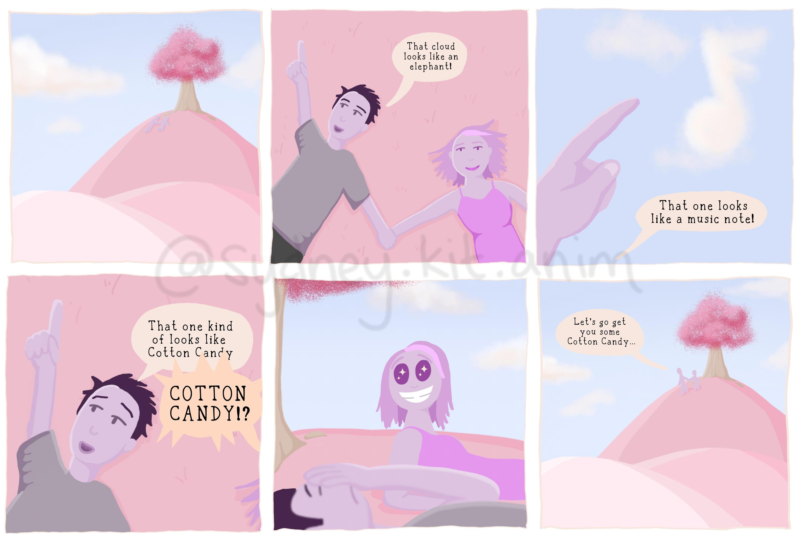

Introcution to "Color Theory"
What is it? How can you participate? Where can you view it?
January 1st, 2022
Welcome, everyone, to my first blog of 2022!
In 2021, I saw lots of projects, including three self-published Love, Me comic books, more Laney animations, and the creation of CX3, a Columbus, OH based comic creator club. Now that we are in a new year, and I have graduated from The Ohio State University, get ready for some more, exciting projects!
About "Color Theory"
My first project is called "Color Theory". It is a comic series where you, the viewer, get a say in what the comics will be. I had recently purchased the Pantone: 35 Inspirational Color Palettes book and knew right away what I wanted to do with it. Each week I was going to share a new palette from the book and ask my audience to tell me what it reminds them of. Before I sent it out to my audience, I tested it out with my CX3 group first by sending my own color palette.

I recieved responses almost immediately with suggestions I wouldn't have thought about! I was so excited I completed the first comic within hours of getting the responses. This is what I needed. I needed that validation that this is a good idea. So I published the introduction video a couple days ago and we're ready to go!
How Can You View The Comics?
While my end goal is to add all the comics to my website, the best place to stay updated is through my Instagram or my Facebook.
How Can You Inspire The Comics?
I will post new comics every Monday, Wednesday, and Friday. The best way to have your responses be seen is by leaving a comment on the posts. If you're looking for a more annonymous approach. I will also post the palette on my Instagram story on Monday's where you can reply there as well. My direct messaging, as well as my email, is always open for submission as well.
Want more?
Now that I am living the full-time job life (instead of the almost full-time job ontop of full-time student), I have more availability for commissions, if inspiring the comic series isn't enough for you. I still have items left in my shop, if you haven't ordered your comic books yet.